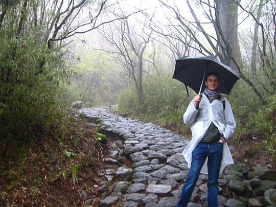

Photos from our second trip to Japan, 18 March–2 April 2005 are on Flickr
Japan, 18-28 April 2003
- Index
- Arrival, Day 1: Tsukiji Fish Market; Hama-Rikyu Gardens [1.66Mb]
- Day 1 (continued): DesignFesta [1.25Mb]
- Day 2: Meiji Shrine and inner garden; Harajuku; Nezu Institute; Aoyama cemetery [2.38Mb]
- Day 3: Ghibli Museum, Mitaka; Shinjuku [1.66Mb]
- Day 4: Hakone: Taisekan ryokan [1.81Mb]
- Day 5: Hakone: Taisekan; Hakone Museum of Art; ropeway to Owakudani; Lake Ashino-ko [1.93Mb]
- Day 6: Kamakura [4.37Mb]
- Day 7: Senso-ji temple; Asakusa; Joe [1.46Mb]
- Day 8: Koishikawa Korakuen garden; Seibu department store; Ginza [1.2Mb]
- Day 9: Shinjuku-gyoen gardens [2Mb]
- Day 9 (continued): Harajuku, Ueno Park and the Tokyo National Museum, Roppongi Hills [1.59Mb]
Wednesday 23 April: Hakone: Taisekan; Hakone Museum of Art; ropeway to Owakudani (Hell's Valley); Lake Ashino-ko
First half of the day was great... but the 2nd half washed out a bit due to the weather. Good bits: Amazing ryokan breakfast. Before that, bathe in onsen, indoor and outdoor — contemplating forested mountain views from a steaming rockpool. Lovely journey continuing along Tozan rail line, steep uphill in tiny two-car train. Made the very good decision to buy cheap raincoats at Miyanoshita. It started raining at the Hakone Museum of Art, and never let up for the rest of the day.
Morning at Taisekan ryokan

The view greeting you as you look up from your futon on the floor
Looking down out one of the windows towards the river. Half-hidden behind the roofs is the ladies' onsen. The men's onsen is behind the wooden fence there

Bathed in the outdoor pool before breakfast. This is the view through the men's onsen's anteroom, showing the bridge we came over the day before, and the garden beyond.
The elegant maid bringing breakfast

The centrepiece is beautiful little grilled fresh-water fish. The dried seaweed comes in a little laquerware box that looks more like it was made for an expensive fountain-pen or something.
Leaving Taisekan
Looking back over the river towards our part of the hotel complex
The same view, from further up the hiking trail. From here you can see the men's outdoor onsen, the ladies' on the other side of the wooden fence, and our rooms' windows (the bottom-left two windows on the large block on the right).
Looking through the bridge towards the other side of the hotel complex. The red railings make it looking pleasingly medieval, like something out of Princess Mononoke
Ascending the funicular railway

It was cloudy, which made for classic Japanese forest landscapes
Looking back down. The second little car had just passed us — when one goes down, the other must come up — at the halfway-mark.
At the Hakone Museum of Art, we looked at important "art treasures" — ancient pottery — and read about the intellectual/philosopher Mokichi Okada who amassed the art collection and created the museum and garden in 1952. Trinity of elements in his philosophy: Sun, Soil, and Water. Trinity of arts: Art of Healing (medicine); Art of Agriculture; Art of Beauty (fine arts).
While we couldn't take photos inside the museum, you can see the collections here.
The Museum looks out over the impossibly immaculate moss garden, towards distant mountains. We strolled the mossy path, and had frothed green tea and traditional sweet in the teahouse by ourselves.
Hakone Museum of Art and moss garden
This is actually the view from inside the museum shop, hence the reflections and the slightly muted colours
This is the view from the little bridge. The trees are all gnarled little maples, making the garden particularly spectacular in autumn
Hakone Museum of Art and moss garden (continued)
The view from inside the teahouse. You can see cherry blossoms still sprinkled around everywhere outside
Traditional sweet
Excellent umbrellas provided free of charge for all visitors to the museum
Funicular train to Sounzan. Cablecar from Sounzan to Owakudani, "Hell's Valley" (it's on top of a not-quite-extinct volcano). Later, on the cablecar, things started going a bit askew. The rain increased, and visibility dropped to less than a kilometer — and we should've been able to see Mount Fuji! The wind was also swinging the cablecar rather worryingly.
Owakudani ("Hell's Valley")
The cablecars
Nuff said
By this stage the weather was horrendous. Sheltering inside the café, eating a Japanese interpretation of French Fries (big potato wedges from a paper cone), we could see tourists being nearly blown off their feet outside. Fortunately, our decision to wait paid off and there came a lull in the storm. We seized the opportunity to hike up to the sulphur pits...

...in which they boil eggs, reputed to add a year to your life for every one eaten
Kelly added one year to her life. (The state of her glasses gives a hint of the rain outside.) I had one then, and finished the rest in the train on the way home that evening.

Visibility: a 100 meters or so. Not much chance of seeing Mount Fuji
Lake Ashini-ko, the cryptomeria avenue and the old Tokyo road
At the Togendai terminal at lake Ashino-ko, one of the replica 17th-century galleons that ply the lake. We could scarcely see the shore, but that didn't stop the bilingual recorded public-address going breezily "Look to your right..." and pointing out invisible landmarks.
From Hakone-Machi, we walked the 2km cryptomeria avenue (planted 1618) to Moto-Hakone. Peeking out from under my umbrella.
Hundreds of tall cedars as thick as this one, and thicker
Abandon hope all ye who enter. Despite the weather, we still wanted to walk the old Tokaido highway to Hatajuku, a 4km hike.

While it was quite a treacherous road in its day, with steep slopes, hairpin bends and bandit attacks, it was much worse now. It must've deteriorated a lot, or maybe they never learnt the trick of selecting paving stones with flat tops.
Just like in Princess Mononoke! But none appared. After a miserable wet hour of muddy slippery trudging, we re-enacted the endless-wait-at-the-bus-stop-in-the-rain scene in Totoro, and caught a ride all the way to Odawara.
One final mistake that evening: I made us get off our express train about 20 minutes early (Kelly was sleeping), so we had to take the subway the rest of the way. What a mess. We had snacks in our room that evening, Kelly reviving herself with "rich milk" flavour ice-cream. Discovered that all paper items in our backpacks were soaked.
Next: Day 6: Kamakura